### Introduction
When creating a footprint for a penetration test, the first thing to get
straight is whom exactly are you targeting. Often in addition to an organization
itself, we are also interested in enumerating its subsidiaries.
This task is by far the least automation-friendly task that exists in my
footprinting process. My process is focused on using freely available
information. If you're willing to shell out some serious money, then you can
probably fully automate this process much better.
To the point, American based companies declare subsidiary organizations they own
within Security and Exchange Commission filings. These filings are unstructured
HTML documents which are managed on the [SEC's website](https:///www.sec.gov/).
The process of parsing, interpreting, and associating SEC filings with
organizations by their colloquial name is tedious. Anyone who has ever had the
misfortune of attempting to use the SEC's website directly knows this.
Thankfully, there are alternative sources to acquiring this information but
**you must always double-check any returned subsidiaries against current
records**. What I do is Google the presumed subsidiary names and look at recent
news articles to see if the entity has recently been sold/divested/spun-off,
etc. In short, the records you get back from the sources below are not
infallible, so don't treat them as such.
My tool [CRYSTAL BALL](https://github.com/cramppet/crystal_ball) (at the end of
the post) is designed to try and provide you with a simple baseline. It
identifies subsidiaries of an organization using freely available APIs and
attempts to associate domains to the subsidiary names returned.
One final thing before we move forward is that subsidiaries are not the same as
**brands**, **products** or other kinds of **trademarked names**. These sorts of
objects you will have to enumerate manually, I know of no way of performing that
kind of enumeration in an automated fashion in general.
**Here are the sources I use to do this process:**
- [CorpWatch API](http://api.corpwatch.org)
- [Crunchbase](https://crunchbase.com)
- [Google](https://www.google.com/)
- [WikiData](https://www.wikidata.org/)
- [OpenCorporates](https://opencorporates.com)
- [Dun & Bradstreet](https://www.dnb.com/)
### CorpWatch API
I found this API a few years back and it's highly useful. You can read about
what CorpWatch does specifically on [their website
here](https://corpwatch.org/).
One of the many things that CorpWatch does is perform the messy task of parsing
SEC 10-K filings data of organizations. These filings contain a listing of
subsidiaries that an organization owns.
The CorpWatch API is very friendly and given a colloquial name of an
organization it will do it's best to try and give you any companies that match
that name.
This often works like how you'd expect it to, but sometimes problems can arise,
particularly if the company of interest is not very large or has a common name
associated with them. Basically, just pay attention and if something fails the
smell test, then it's probably wrong.
An alternative to using the CorpWatch API directly, is using a web front-end
that CorpWatch hosts called "CrocTail". This web interface can sometimes be
useful in the case mentioned above to help disambiguate a company name from
several others which may share similar names:
http://croctail.corpwatch.org/
<a href="croctail_walt_disney.png"><p>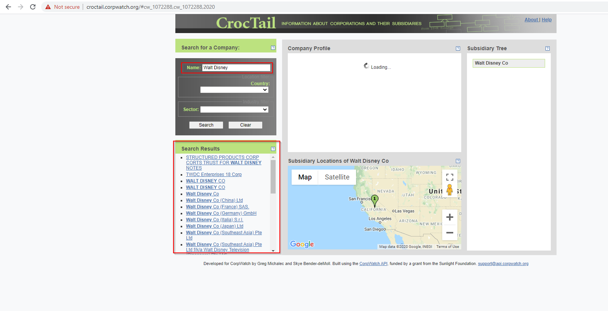</p></a>
Personally though, I just prefer to use the API once I have an idea of what the
right keyword search ought to be. I wrote a gist for you which given a company
name will use the CorpWatch API, you can find it here:
https://gist.github.com/cramppet/1668074a6b20fd54d5070a46d33e714b
You can invoke the script I linked above like this:
```
./corpenum.py 'Walt Disney'
```
<a href="corp_enum_walt_disney.png"></a>
### Crunchbase
Crunchbase is a knowledge base which helps investors make informed decisions.
Crunchbase tracks companies and certain properties of them. One property of
interest are acquisitions that an organization has made. These acquisitions
imply that the acquired company is now a subsidiary. You can use the Crunchbase
web interface to perform these lookups.
Unfortunately, the Crunchbase API is extremely expensive and the web interface
limits the number of results you can get back. Still, for a free source, it's
not bad. You can get full access to the results using a basic plan which
compared to the API plans is relatively inexpensive:
<a href="crunchbase_walt_disney.png"><p>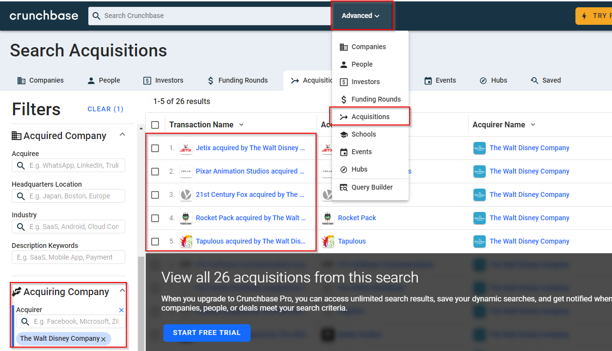</p></a>
### Google
Simple and easy, you can query Google's Knowledge Graph using their web
interface and get back known subsidiaries:
<a href="google_walt_disney.png"><p>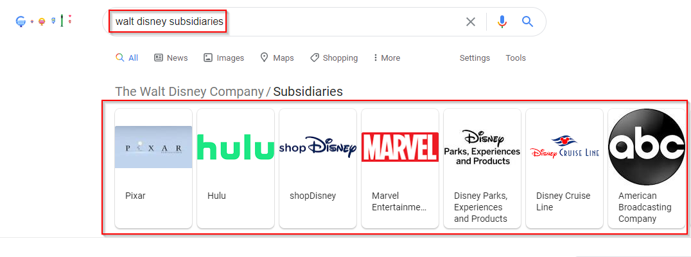</p></a>
A simple technique I like to use for scraping dynamic content like this is using
JavaScript query selectors. Chrome exposes two functions for you to perform
these queries with jQuery-like behavior `$` and `$$`. The latter selects all
instances, the former selects only the first.
There are several different variations of output which I've observed which makes
this task not automation friendly. Manual extraction is the way to go here.
### WikiData
WikiData is a Knowledge Graph based on the now defunct "Freebase" project. The
data source is sometimes useful but can be difficult to use for automation
purposes. Basically, you have to identify the entity ID of the organization of
interest within the WikiData data model before you can query for it's
subsidiaries. The process is much less friendly than the intelligent parsers
used by CorpWatch and Google.
First, try to identify the ID by searching on the [WikiData
website](https://www.wikidata.org/):
<a href="wikidata_walt_disney1.png"><p>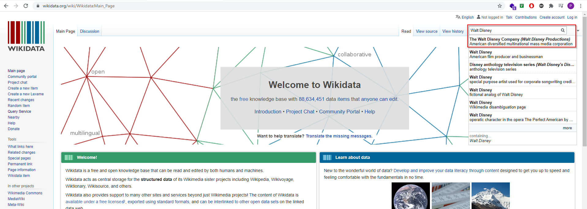</p></a>
<a href="wikidata_walt_disney2.png"><p>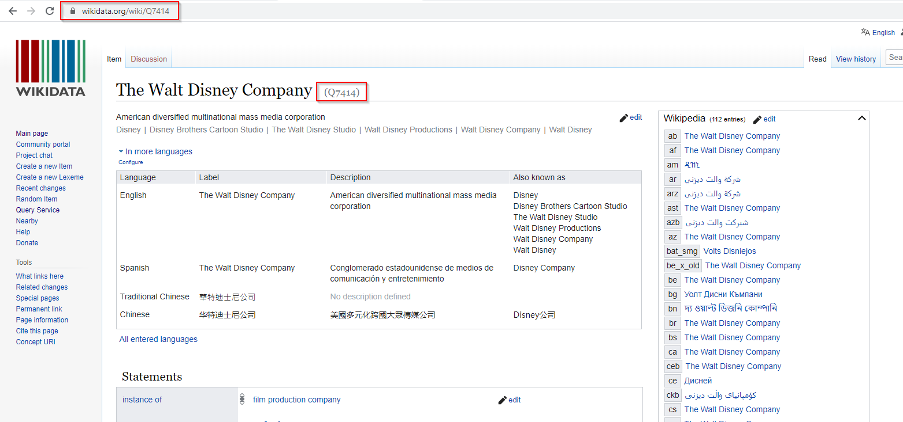</p></a>
The ID in this case is `Q7414`. If anyone knows a better way of determining this
ID programmatically, then I'd love to know about it. Anyway, once you have the
ID, you can use it to peform a SparQL query against the WikiData database. The
specifics of how this query works are pretty detailed and relies upon knowing
not just SparQL but also the gory details of the WikiData data model, thanks for
the great [StackExchange post where I stole it
from](https://opendata.stackexchange.com/questions/13301/is-there-public-database-about-subsidiaries-of-companies)
and here is the [link to the query
itself](https://query.wikidata.org/#SELECT%20DISTINCT%20%3Fitem%20%3FitemLabel%20%3Furl%20WHERE%20%7B%0A%20%20%7B%0A%20%20%20%20SELECT%20%3Fitem%20WHERE%20%7B%20%3Fitem%20%28wdt%3AP31%2Fwdt%3AP279%2a%29%20wd%3AQ43229.%20%7D%0A%20%20%7D%0A%20%20%3Fitem%20%28wdt%3AP127%7C%5Ewdt%3AP199%7Cwdt%3AP749%7C%5Ewdt%3AP1830%7C%5Ewdt%3AP355%29%2B%20wd%3AQ7414.%0A%20%20OPTIONAL%7B%3Fitem%20wdt%3AP856%20%3Furl%20.%7D%0A%20%20SERVICE%20wikibase%3Alabel%20%7B%20bd%3AserviceParam%20wikibase%3Alanguage%20%22%5BAUTO_LANGUAGE%5D%2Cen%22.%20%7D%0A%7D)
You should explore the query within the SparQL query editor, you can hover over
various parts of the query to learn what the pieces do.
<a href="wikidata_walt_disney3.png"><p>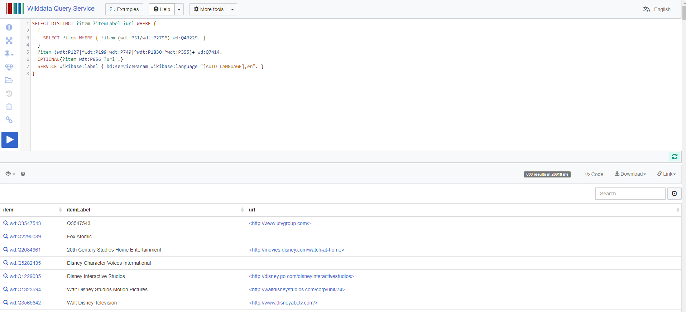</p></a>
Once you know the query you want to run and have validated that it provides you
with the output you want, you can query a REST API that WikiData has to get the
data out in JSON format. You must URL encode the entire SparQL query before
[using it in the API](https://query.wikidata.org/sparql?format=json&query=https://query.wikidata.org/sparql?format=json&query=+SELECT+DISTINCT+%3Fitem+%3FitemLabel+%3Furl+WHERE+%7B+++%7B+++++SELECT+%3Fitem+WHERE+%7B+%3Fitem+%28wdt%3AP31%2Fwdt%3AP279%2A%29+wd%3AQ43229.+%7D+++%7D+++%3Fitem+%28wdt%3AP127%7C%5Ewdt%3AP199%7Cwdt%3AP749%7C%5Ewdt%3AP1830%7C%5Ewdt%3AP355%29%2B+wd%3AQ7414.+++OPTIONAL%7B%3Fitem+wdt%3AP856+%3Furl+.%7D+++SERVICE+wikibase%3Alabel+%7B+bd%3AserviceParam+wikibase%3Alanguage+%22%5BAUTO_LANGUAGE%5D%2Cen%22.+%7D+%7D+)
<a href="wikidata_walt_disney4.png"><p>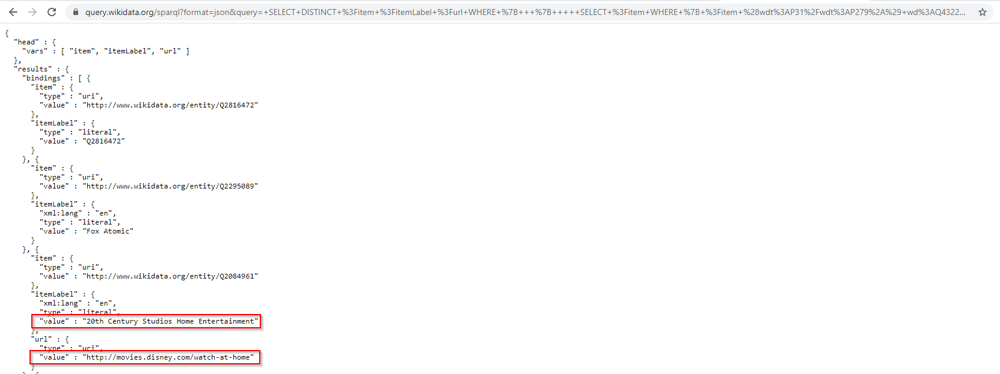</p></a>
At this point it becomes trivially easy to extract the names using the fantastic
JSON parsing utility `jq`:
```bash
curl 'https://query.wikidata.org/sparql?format=json&query=+SELECT+DISTINCT+%3Fitem+%3FitemLabel+%3Furl+WHERE+%7B+++%7B+++++SELECT+%3Fitem+WHERE+%7B+%3Fitem+%28wdt%3AP31%2Fwdt%3AP279%2A%29+wd%3AQ43229.+%7D+++%7D+++%3Fitem+%28wdt%3AP127%7C%5Ewdt%3AP199%7Cwdt%3AP749%7C%5Ewdt%3AP1830%7C%5Ewdt%3AP355%29%2B+wd%3AQ7414.+++OPTIONAL%7B%3Fitem+wdt%3AP856+%3Furl+.%7D+++SERVICE+wikibase%3Alabel+%7B+bd%3AserviceParam+wikibase%3Alanguage+%22%5BAUTO_LANGUAGE%5D%2Cen%22.+%7D+%7D+' | jq -r '.results.bindings[] | (.itemLabel.value + "," + .url.value)'
```
<a href="wikidata_walt_disney5.png"><p>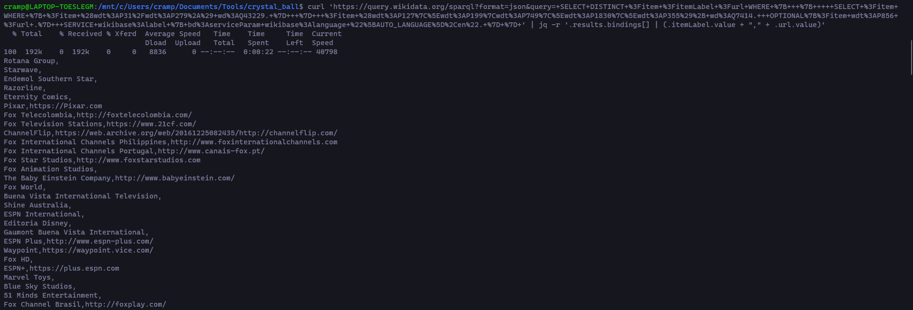</p></a>
### OpenCorporates
OpenCorporates is yet another service which provides an interface for
discovering subsidiaries. This source also includes international entities
unlike the SEC filings-based data which is exclusive to companies based within
the United States.
The website is easy to search and provides a wealth of useful information from
just a single search:
<a href="oc_walt_disney1.png"><p>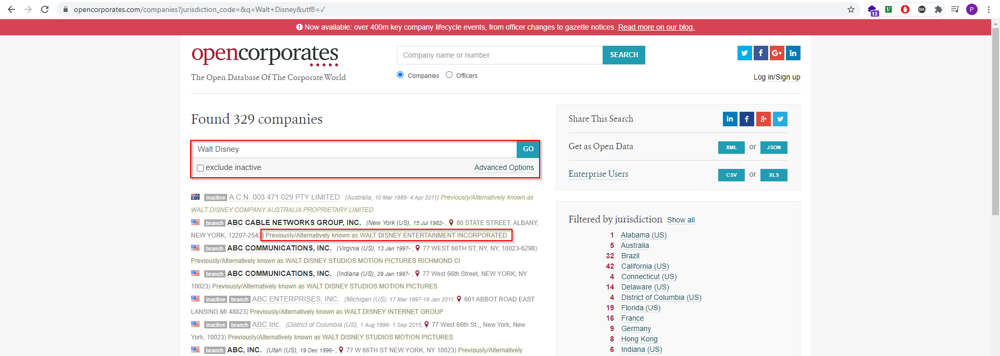</p></a>
In this case, entities are being returned which are matched by your keyword
search in addition to entities which **previously would have matched** before
a name change. This can be very useful.
This is nice enough as-is and can be used for manual parsing. However, if your
company is sufficiently large, there is a good chance it may have a "grouping"
within the OpenCorporates data model. You can query for corporate groupings
from here: https://opencorporates.com/corporate_groupings
<a href="oc_walt_disney2.png"><p>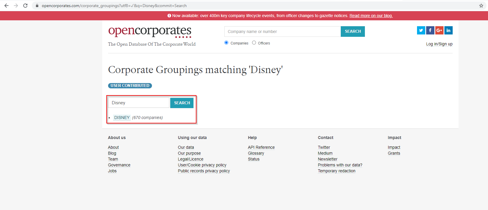</p></a>
Now, you may notice that we had to search for "Disney" instead of "Walt Disney";
this is something you'll have to experiment with to try and locate the right
parent entity if it exists in the corporate groupings data model of
OpenCorporates.
The other thing to mention is that groupings are **user supplied** meaning that
someone external to OpenCorporates added them, this means you should be more
critical of the results and ensure that they are correct.
If you are lucky enough to find a corporate grouping, then you can now use the
REST API of OpenCorporates to acquire the subsidiaries in JSON format:
```bash
curl 'https://api.opencorporates.com/corporate_groupings/Disney' | jq -r .results.corporate_grouping.memberships[].membership.company.name
```
<a href="oc_walt_disney3.png"><p>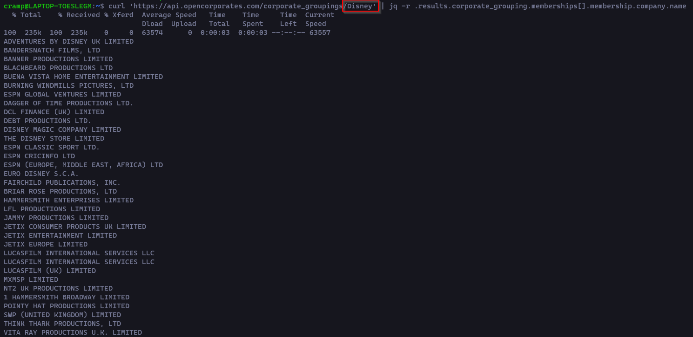</p></a>
### Dun &amp; Bradstreet
Dun &amp; Bradstreet are an old-school company which specialize in parsing and
dealing with SEC filings data. They have a large knowledge base which includes
many of the subsidiary names which you can acquire from SEC-based data like
CorpWatch, Google, and OpenCorporates.
My primary purpose in using DNB is not to actually locate subsidiaries, though
you can use it for that purpose if you're willing to pay a lot of money for it:
<a href="dnb_walt_disney1.png"><p>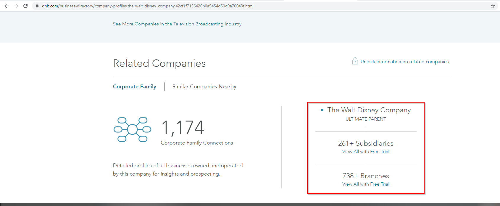</p></a>
Instead, what I am really concerned with is their **mapping between company
names and domain names**. Dun &amp; Bradstreet provide a curated mapping dataset
which I have not been able to find elsewhere. How exactly they acquire this
information is unclear to me:
<a href="dnb_walt_disney2.png"><p>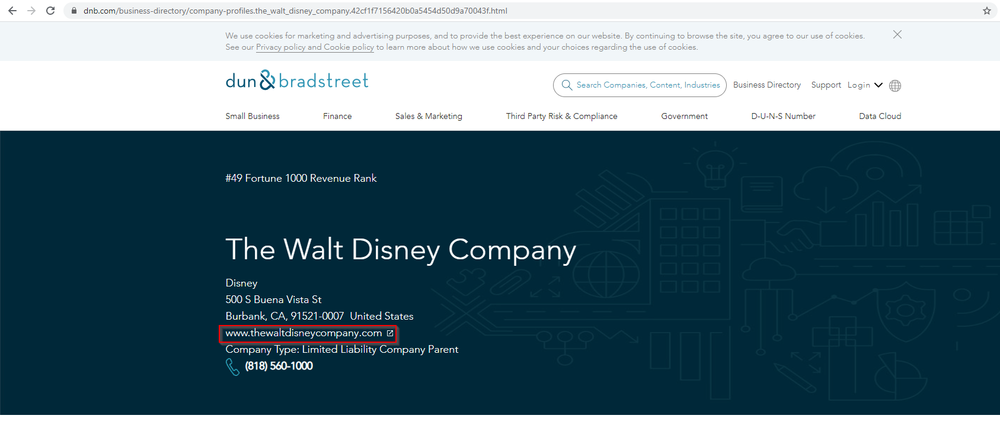</p></a>
This information matters **a lot** because it actually makes the subsidiary
names useable in the latter stages of the footprinting process. Without any
known domains for a subsidiary, the name itself is essentially useless.
Dun &amp; Bradstreet have anti-bot controls in place to prevent the automated
scraping/usage of their website, however, there is a way that I have found which
gives you something relatively useful. DNB provide a large sitemap of many of
their indexed companies. The key is that the URLs themselves, due to how they
are structured, can be used to perform searches offline.
The only issue is you have perform company to domain resolution manually by
visiting the links returned. This is because of the anti-bot controls I
mentioned before.
<a href="dnb_sitemap.png"><p>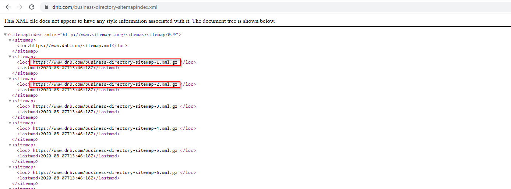</p></a>
I have several scripts which can aid you in extracting and post-processing of
this data dump. The data dump totals at about 11 GB. The first script to run is
the extractor which parses the sitemap files and extracts all of the links which
provide a large index of all the URLs within the sitemap.
I'd suggest that you further segment the results into smaller indices which will
allow you to perform significantly faster queries in the general case. I based
my smaller indices on the first character of each URL, this corresponds to the
first character of the company name. Note that because DNB provides a global
index of companies, there will be many non-ASCII characters that will arise in
the results.
Once you finish downloading, extracting and indexing the eventual result is you
can do things like this:
<a href="dnb_export_search.png"><p>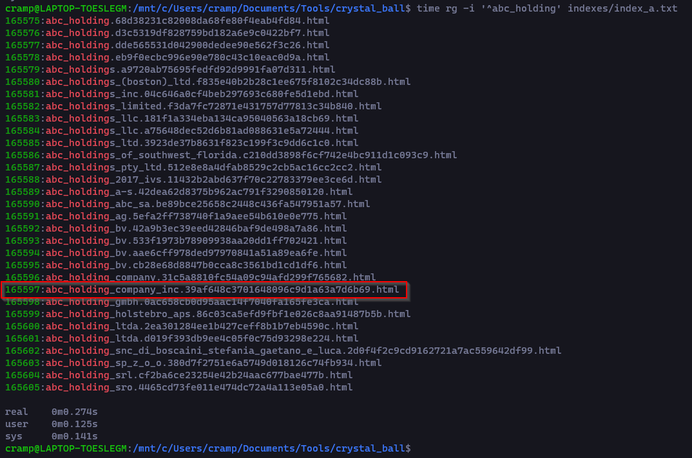</p></a>
At which point, you can use the URLs returned to reconstruct the full URL for
manual review:
`https://www.dnb.com/business-directory/company-profiles.abc_holding_company_inc.39af648c3701648096c9d1a63a7d6b69.html`
<a href="dnb_abc.png"><p>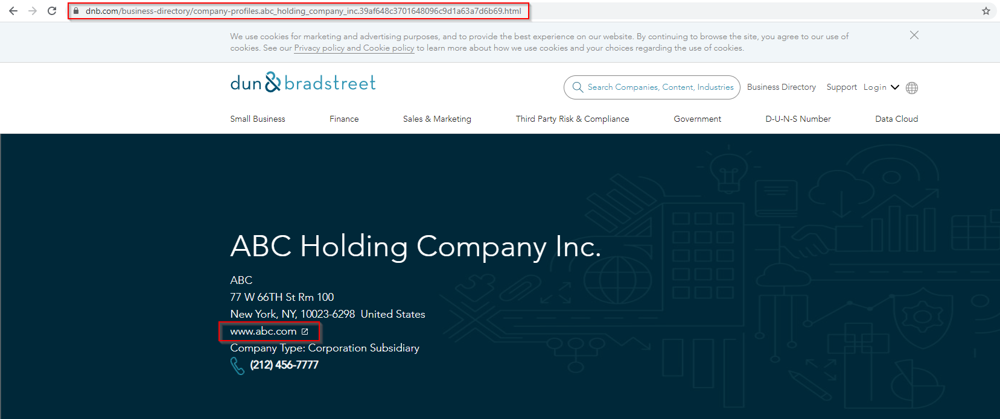</p></a>
### CRYSTAL BALL
<div class="alert alert-danger" role="alert">
<i class="fa fa-exclamation-circle"></i>
This tool should be used with caution. If you blindly accept it's output then
you will likely enumerate things outside of your scope. **Use this tool
wisely**.
</div>
With the disclaimer out of the way, here's essentially how the tool works:
1. If a canonical name is provided, attempt to locate subsidiaries using CorpWatch's API
2. If a WikiData ID is provided, attempt to locate subsidiaries using WikiData API
3. Attempt to associate domains to all located subsidiaries:
- Try to find a match using the [Clearbit API](https://clearbit.com/blog/company-name-to-domain-api/)
- Try to find a match in the [Crunchbase Open Data Map (ODM)](https://data.crunchbase.com/docs/open-data-map)
- Try to find a match using the [Google Knowledge Graph API](https://developers.google.com/knowledge-graph)
This tool requires some configuration in order to get going. Everything you need
to do can be done for free, but you will need a custom email domain (no GMail)
to acquire the Crunchbase ODM. I'm not going to detail the setup process
because you should be able to figure it out yourself using the links above.
Here's what the `config.json` file should look like once it's setup:
<a href="cb_config.png"><p>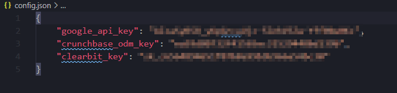</p></a>
After performing the configuration, you can use the tool. Have a look at the
command line help in order to understand what options exist:
<a href="cb_usage.png"><p>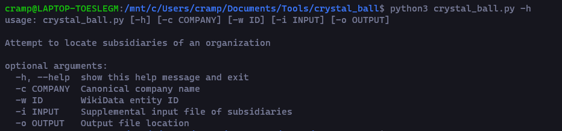</p></a>
Here is the output that I got from the tool:
<a href="cb_results.png"><p>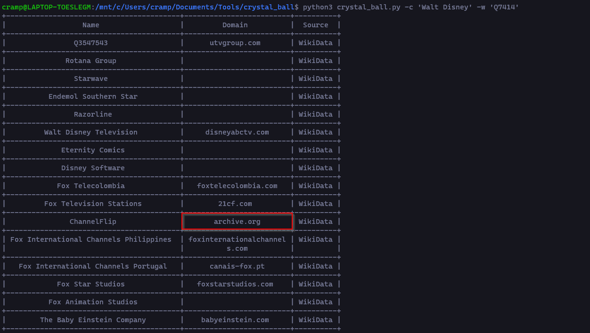</p></a>
Obviously, the tool cannot associate every subsidiary name identified to a
domain and some of the results that are returned from the tool can be seen to be
incorrect in some sense like the `archive.org` result shown above. These kinds
of results are typically indicative of domains which no longer exist and the
WikiData entry to which they correspond is populated with a historical link from
the Internet Archive. It is usually safe to ignore these entries.
The output from the tool varies quite a bit from one company to the next,
depending upon how small or obscure the company is that you targeting your
millage using this tool is going to vary a lot. **Your best bet is going to
always validate the output from the tool**.
<center>
<a href="tenor.gif"></a>
</center>
### Conclusions
This post hopefully gave you some insight into how I perform the task of
identifying subsidiaries.
Using the list of subsidiary domains, what we will do in the next part is
attempt to increase the number of total identified domains by using some much
more automation friendly techniques such as reverse WHOIS, DNS, X.509.